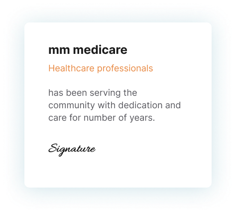
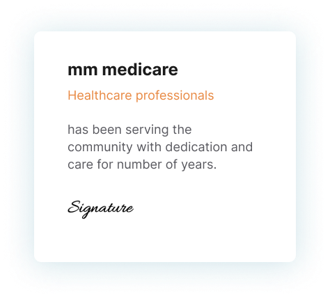

×
Welcome to MM Medicare
Welcome to MM Medicare, your trusted partner in health and diagnostics where precision meets innovation. Headquartered in Manalur, Thrissur. Our well-furnished and fully air-conditioned super speciality clinic is staffed by experienced and specialist doctors, supported by a team of caring professionals. We provide a comprehensive range of services, including observation, nebulization, ECG, suturing, and minor
procedures, all designed to meet the highest standards of patient care.
Our Clinic is equipped with state-of-the-art French-made equipment, ensuring the
highest standards of accuracy and reliability in diagnostics. Whether it's routine blood
tests, advanced genetic screenings, or specialized diagnostic procedures, our cuttingedge
technology guarantees precise results you can trust. Our commitment to
precision and accuracy ensures that you receive the most reliable results, empowering
you and your healthcare providers to make informed decisions. With the commitment
to excellence and a focus on patient care, we strive to deliver timely and accurate
diagnostics to support your health and well-being. Experience the future of medical
testing with mm medicare, where technology and expertise come together for your
optimal health.
At mm medicare, we pride ourselves on our network of branches strategically located
in Karuvanthala, Arimboor, Anthikkad, Kanjany, and Amala Nagar. This extensive
reach allows us to serve the community efficiently, offering a wide range of diagnostic
services that cater to the diverse needs of our patients.
Our team of highly trained professionals is devoted to delivering exceptional care and
service. Whether it's routine screenings or specialized tests, we are here to support
your health journey with expertise and compassion.
Experience the difference with mm medicare, where cutting-edge technology and a
patient-centric approach come together to provide unparalleled diagnostic services.
Your health is our priority....
 
